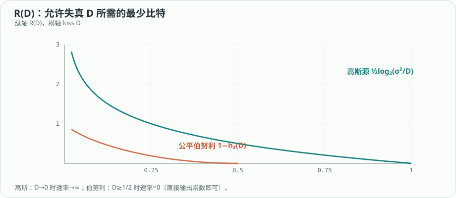
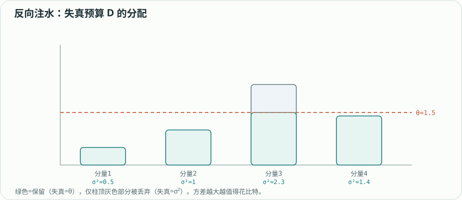
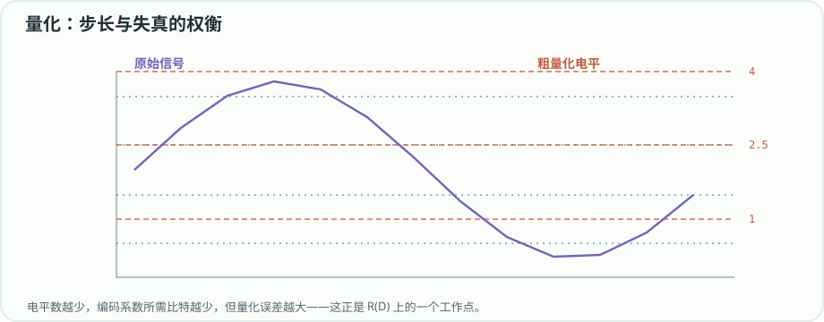

允许一点失真，到底能省下多少比特？
无损压缩的极限是熵：一个公平硬币序列每比特都不可压缩，因为你必须一字不差地恢复它。但现实中很多场景并不要求一字不差——你听不出 128 kbps 的 MP3 与 CD 的差别，也看不出 JPEG 里那些被粗量化的高频细节。放松“无损”这个约束，能换来多少压缩率？
率失真理论（rate–distortion theory）回答的正是这个问题：给定一个失真度量和一个可接受的失真上限 D，传输一个信源样本最少需要多少比特。它不是启发式经验，而是一条硬边界。
失真度量与率失真函数的定义
先把“失真”量化。给定单个样本的失真度量 d(x, x̂)（重构为 x̂ 时的代价），序列的平均失真是期望 E[d(X, X̂)]。常见度量：
| 失真度量 | 定义 | 典型场景 |
|---|---|---|
| 汉明失真 | d=0 若 x=x̂，否则 1 | 离散/二进制数据 |
| 平方误差 | d=(x−x̂)² | 连续信源、图像、音频 |
| 绝对误差 | d=|x−x̂| | 对离群点更鲁棒 |
| 感知加权 | 由感知模型定义权重 | 心理声学、视觉编码 |
直观上：在所有满足平均失真≤D 的重构分布 p(x̂|x) 中，选一个使 X 与 X̂ 互信息最小的——互信息越小，描述 X̂ 所需的比特越少。R(D) 有三条基本性质：
- R(D) 是 D 的非增凸函数：允许更大失真，所需速率下降，但边际收益递减。
- 离散信源 R(0)=H(X)：无损压缩的极限回到熵。
- 当 D≥Dmax 时 R(D)=0：失真宽松到可以“什么都不传”，直接用最可能的 x̂ 重构。

高斯源：R(D)=½log₂(σ²/D)
最经典的结果是把 X 取为 N(0, σ²) 高斯源、失真为平方误差。此时率失真函数有闭式解：
注意几个边界：D→0 时 R(D)→∞，这是连续信源的必然——要零均方误差就得无穷比特，与 H(X) 有限不同。D≥σ² 时 R(D)=0，一个常数重构（如取 0）的平均平方误差恰好是方差 σ²，没必要再传任何信息。R(D) 曲线的形状说明：保真度越高，最后一分改进的代价越昂贵。
公平伯努利源（p=1/2）配合汉明失真则有 R(D)=1−h₂(D)（0≤D≤1/2），其中 h₂ 是二元熵函数。D=0.1 时 R≈0.531，D=0.25 时 R≈0.189——与上面的高斯曲线形状完全不同，但同样单调下降且凸。
反向注水：把失真预算分给最不确定的分量
如果有多个独立的平行高斯分量，方差为 σ₁², σ₂², …，且总失真预算为 D，最优分配由反向注水给出：选一个水位 θ，让每个分量的重构误差为
水位 θ 由总预算 D 确定：方差高于 θ 的分量被“浅埋”到失真 θ（值得花比特），方差低于 θ 的分量完全不传（失真就是它自身的方差）。图 19-2 用一个两分量的例子展示这个机制。

这个结构在第 20 章讨论并行高斯信道时会再次出现：那里是对容量“注水”，这里是对失真“反向注水”。这种对偶是信息论中反复出现的主题。
Shannon 第三定理：R(D) 是一条边界
第一定理给出无损压缩的极限（熵），第二定理给出可靠通信的极限（容量），第三定理——即率失真定理——给出有损压缩的极限。对平稳遍历信源和有限失真度量：
- 若编码速率 R>R(D)，存在编/解码方案使平均失真 ≤D；
- 若 R<R(D)，任何方案的渐近平均失真都必然大于 D。
证明与信道编码定理类似，同样依赖随机编码与典型性：编码器与译码器预先约定一个重构码本，使原序列与其重构的联合分布逼近最优条件分布 p*(x̂|x)。
把 R(D) 写成可测试代码
本仓库的 Python 样例给出高斯源与公平伯努利源的 R(D)，并用固定点断言。
from examples.coding import (
gaussian_rate_distortion, bernoulli_rate_distortion)
assert gaussian_rate_distortion(0.25) == 1.0 # σ²=1, D=σ²/4
assert gaussian_rate_distortion(0.0625) == 2.0 # D=σ²/16
assert gaussian_rate_distortion(1.0) == 0.0 # D=σ² ⇒ 无需传信息
assert round(bernoulli_rate_distortion(0.1), 3) == 0.531
assert round(bernoulli_rate_distortion(0.25), 3) == 0.189高斯源、平方误差、σ²=1；D≥σ² 时 R(D)=0。数值按自然对数换底为比特，与正文公式一致。
JPEG、MP3 与感知加权失真
有损压缩标准的“质量滑块”本质上就是在 R(D) 曲线上选一个工作点。

JPEG：把图像切 8×8 块，做离散余弦变换（DCT），再对系数量化——高频分量量化步长大、低频小，最后对量化系数做 Huffman/算术编码。量化越粗，失真越大、码率越低。标准量化表凝聚的正是“人眼对亮度高频不敏感”的先验知识。
MP3：用心理声学掩蔽曲线定义每个频段的失真阈值，把比特集中分配给听觉敏感区。它做的是一种感知加权的率失真优化，而非在 MSE 意义下最优。
下一章把熵从离散推到连续：微分熵可以为负，这个看似反常的性质恰好提示“连续信源的复杂度是相对的”。
来源与延伸阅读
- C. E. Shannon (1959), Coding Theorems for a Discrete Source with a Fidelity Criterion：率失真理论的原始论文。
- R. Blahut (1972), Computation of Channel Capacity and Rate-Distortion Functions：率失真函数的迭代算法，姊妹于容量计算。
- MIT 6.441 (2016) Rate-Distortion：R(D) 的性质与反向注水。
- Cover & Thomas, Elements of Information Theory：高斯源 R(D) 与注水法的完整推导。